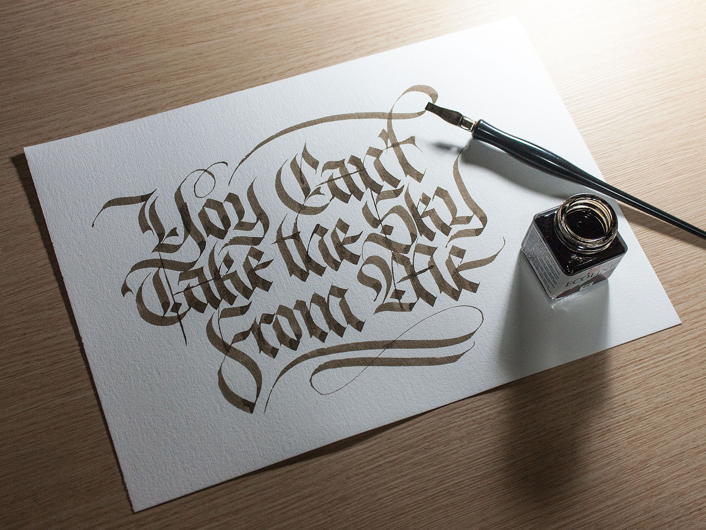
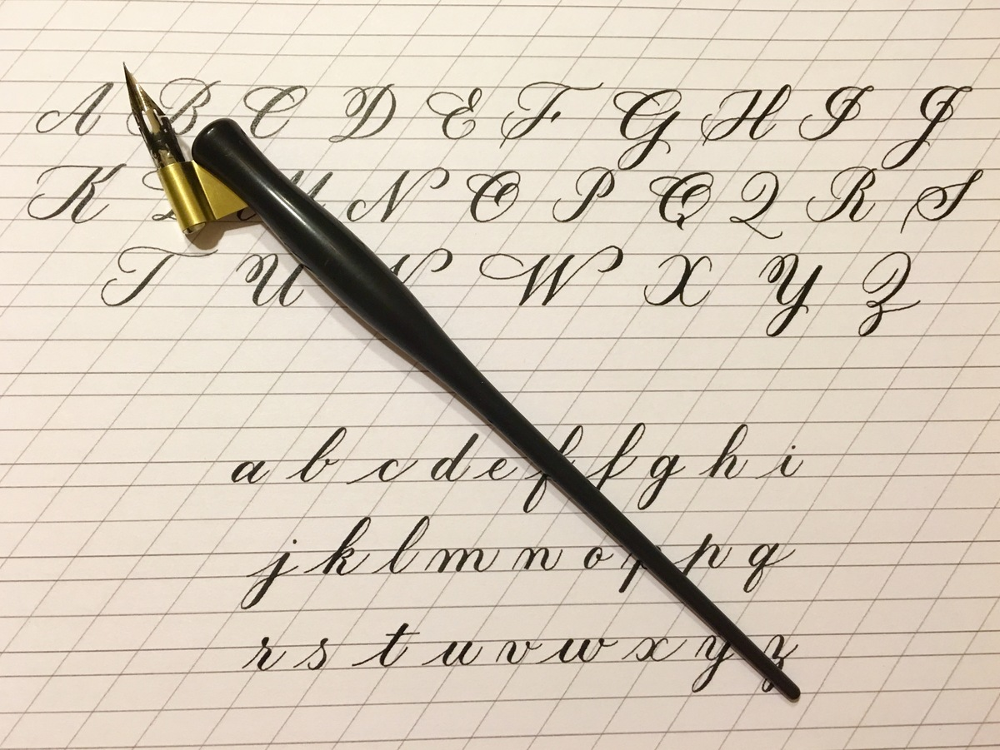
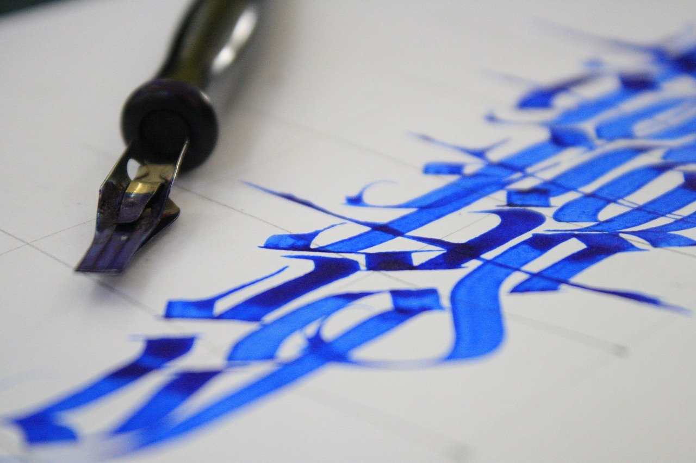

Магазин каллиграфии в Санкт-Петербурге для детей и взрослых
Магазин каллиграфии в Санкт-Петербурге
В нашем интернет-магазине каллиграфии вы найдете любой товар по
приемлемой цене, заходите прямо сейчас! Каллигра́фия (от греч. καλλιγραφία — «красивое письмо») — одна из отраслей изобразительного искусства.
Ещё каллиграфию часто называют искусством красивого письма. Современное определение каллиграфии звучит следующим образом: «искусство оформления знаков в экспрессивной, гармоничной и искусной манере».
История письменности — это история эволюции эстетических понятий, развивающихся в рамках технических навыков, скорости передачи информации и материальных ограничений человека, времени и пространства.
Стиль письма, обычно описываемый как шрифт, рука или алфавит.Каллиграфия для взрослых

Курсы и уроки по каллиграфии
Курсы каллиграфии для детей и взрослых в Санкт-Петербурге.
Каллиграфия — это искусство, которое дарит не только эстетическое удовольствие, но и прикладной навык красивого письма. Он пригождается в жизни и развивает человека не только в техническом плане, но и в психологическом и интеллектуальном.
Люди, которым раньше не нравилось писать от руки, находят в этом занятии умиротворение и красоту. Эти упражнения развивают интеллектуальные способности и чувство прекрасного.
Каллигра́фия (от греч. καλλιγραφία — «красивое письмо») — одна из отраслей изобразительного искусства. Ещё каллиграфию часто называют искусством красивого письма.
Современное определение каллиграфии звучит следующим образом: «искусство оформления знаков в экспрессивной, гармоничной и искусной манере».
История письменности — это история эволюции эстетических понятий, развивающихся в рамках технических навыков, скорости передачи информации и материальных ограничений человека, времени и пространства.
Стиль письма, обычно описываемый как шрифт, рука или алфавит.дополнительные материалы можете найти тут
Установлено, что уровень развития каллиграфических навыков влияет на грамотность в следующих случаях:
При крупном почерке учащиеся труднее усваивают орфографию, т.к. в этом случае детский глаз с напряжением охватывает слово и плохо вычленяет орфограммы;
Нечёткое, неряшливое письмо букв и соединений искажает структуру слова и вызывает появление ошибок. Чаще всего ошибки типа замен, искажения букв является следствие их оптического или кинетического сходства. Погрешности в методике формирования каллиграфических навыков в 1 классе также вызывают стойкие ошибки.
Так, требование безотрывного письма ведёт за собой недописывание элементов букв. А упражнения в механическом списывании образцов вызывают появление двойных букв.
Замечено, что грамотность письма снижается в условиях повышения скорости письма (в начале каждого года обучения), а также при индивидуальном замедленном темпе письма у ученика.

Доступные материалы по каллиграфии
Каллиграфия для детей и взрослых в Санкт-Петербурге.
Обучение искусству каллиграфии красивого и чёткого почерка.
В переводе с греческого «калли» означает «хорошо», а «графия» — написание. Красивый, ровный и чёткий почерк принято называть каллиграфическим.
Чтобы овладеть искусством каллиграфия, необходим художественный талант в сочетании с долгими годами упражнений. Каллиграфия для взрослых подразумевает не только эстетическую часть, но и удобство чтения, а также единство стиля написания каждой буквы.
Особенно важен каллиграфический почерк для тех, кто пишет в документах, хотя с переходом на цифровые и биометрические штучки вместо людей в наших паспортах начали писать машины. И почерк у них вовсе не каллиграфический. Получается, что современные компьютерные технологии делают каллиграфия для детей, как и письмо на бумаге в целом, вымирающими видами искусства.
В ходе исследования моя гипотеза подтвердилась. Несмотря на то, что в современной жизни большую часть нашего времени занимают компьютеры, планшеты и телефоны, искусство каллиграфии все-таки необходимо в школе. Поэтому нужно способствовать возрождению культуры каллиграфического письма в России.
Ведь от степени сформированности и автоматизированности этих действий зависит не только успех продвижения в учебной деятельности, но психическое и физическое развитие.